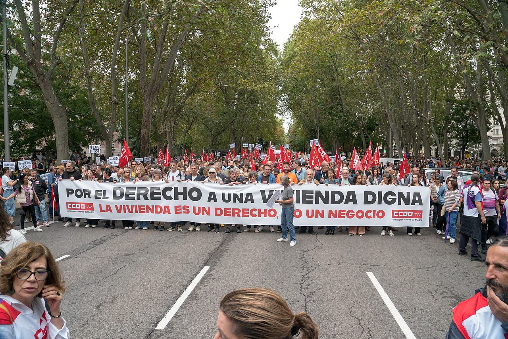

Foto: Nemo, CC BY-SA 4.0Spagna, sciopero generale per la casa a 18 giorni dal voto
La crisi è vera, la ricetta no: il tetto agli affitti protegge chi è già dentro, a chi cerca casa servono case nuove.

Foto: Nemo, CC BY-SA 4.0La crisi è vera, la ricetta no: il tetto agli affitti protegge chi è già dentro, a chi cerca casa servono case nuove.

— FINE EDIZIONE · HAI LETTO TUTTO QUELLO CHE CONTA —